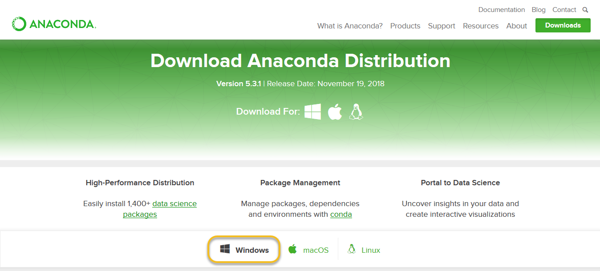
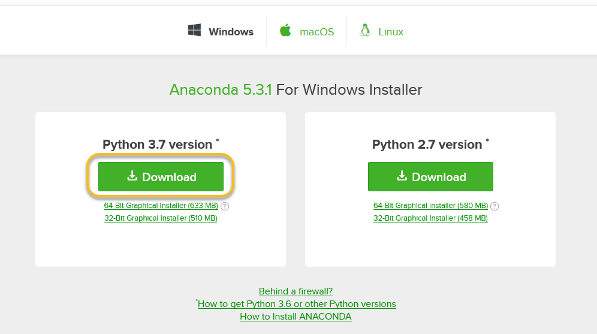
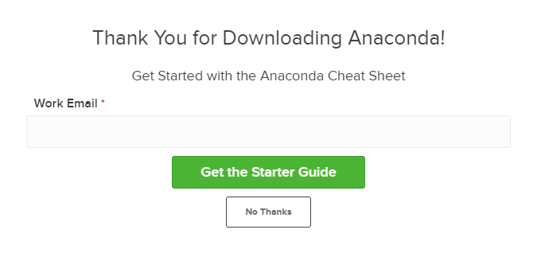
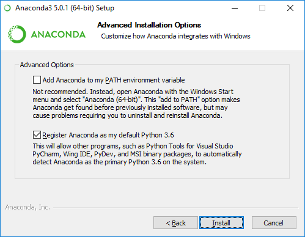
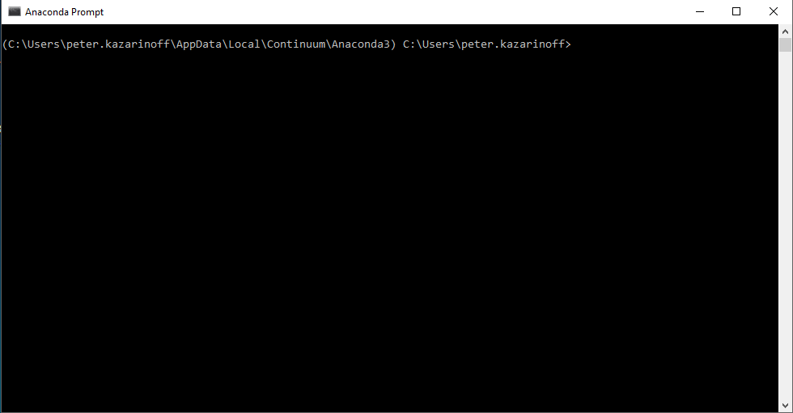
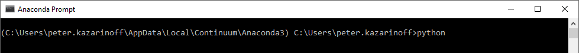
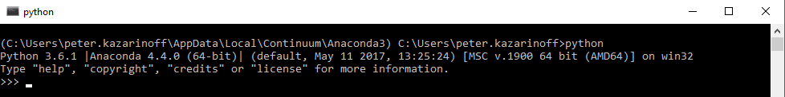

1.2. Installing Anaconda¶
In this section, we will run through how to install the Anaconda distribution of Python on Windows 10. I think the Anaconda distribution of Python is the the best option for undergraduate engineers who want to use Python. Anaconda is free (although the download is large which can take time) and can be installed on school or work computers where you don’t have administrator access or the ability to install new programs.
Steps:¶
Select Windows
Download the .exe installer
Open and run the .exe installer
Open the Anaconda Prompt and run some Python code
1. Visit the Anaconda downloads page¶
Go to the following link: Anaconda.com/distribution
The Anaconda Downloads Page will look something like this:

3. Download¶
Download the Python 3.8 version. Python 2.7 is legacy Python. For undergraduate engineers, select the Python 3.8 version. If you are unsure about installing the 32-bit version vs the 64-bit version, most Windows installations are 64-bit.

You may be prompted to enter your email. You can still download Anaconda if you click [No Thanks] and don’t enter your Work Email address.

The download is quite large (over 500 MB) so it may take a while for the download to complete.

4. Open and run the installer¶
Once the download completes, open and run the .exe installer

At the beginning of the install, you will need to click [Next] to confirm the installation,

and agree to the license.

At the Advanced Installation Options screen, I recommend:
do not check “Add Anaconda to my PATH environment variable”
Keep “Register Anaconda as my default Python” 3.7 checked

5. Open the Anaconda Prompt from the Windows start menu¶
After the Anaconda install is complete, you can go to the Windows start menu and select the Anaconda Prompt.

This will open up the Anaconda Prompt. Anaconda is the Python distribution and the Anaconda Prompt is a command line tool (a program where you type in your commands instead of using a mouse). It doesn’t look like much, but it is really helpful for an undergraduate engineer using Python.

At the Anaconda Prompt, type python. The python command starts the Python interpreter.

Note the Python version. You should see something like Python 3.7.0. With the interperter running, you will see a set of greater-than symbols >>> before the cursor.

Now you can type Python commands. Try typing import this. You should see the Zen of Python by Tim Peters

To close the Python interpreter, type exit() at the interpreter prompt >>>. Note the double parenthesis at the end of the command. The () is needed to stop the Python interpreter and get back out to the Anaconda Prompt.
To close the Anaconda Prompt, you can either close the window with the mouse, or type exit.
Congratulations! You installed the Anaconda distribution on your Windows computer!¶
When you want to use the Python interpreter again, just click the Windows Start button and select the Anaconda Prompt and type python.